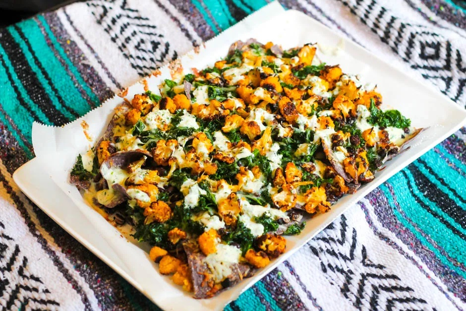

Cauliflower Kale Nachos - or Not Mo's Nachos

Description
Also a recipe lifted from my sister,
these cauliflower kale nachos have become a staple in the Wetta-Printz household. They're not exactly a "lazy weeknight meal",
but they certainly hit a comfort food niche. We like to call these "Not (Y)our Dad's Nachos". While Mo loved a weeknight
pan of oven-baked nachos, his were constructed thusly: a small slice of Velveeta was placed atop a single Tostito chip,
with one (maybe 2) pickled jalapenos nestled on top. It was a beautiful thing, but not something anyone but my dad could argue was
a meal.
As our unofficial name for this recipe implies, these are not Mo's nachos. I don't think my dad ever had kale in my lifetime, and
cauliflower was something we got off the salad bar, and only rarely. Still, with the pickled jalapenos and melty Monterey
Jack, these definitely share a flavor profile with Mo's classic, but with the added boost of leaving our tummies full and happy.
Ingredients
For nachos:
- 1/2 can black beans
- 6 oz shredded Monterey Jack cheese
- 1 large bunch kale or 2 small bunches kale, de-stemed and roughly chopped
- 1 medium head cauliflower
- salt & pepper
- olive oil
- 1/4 cup chopped cilantro
- 12 oz blue corn tortilla chips
- pickled jalapenos
For jalapeno crema:
- 2-4 jalapenos (seeds removed for less heat)
- 1 cup fresh cilantro
- 3/4 cup mayonnaise
- 1-2 garic cloves
- Juice of 1 lime
- 1 tbsp extra virgin olive oil
Steps
- Preheat oven to 425F. Toss cauliflower in olive oil, sprinkle with salt and pepper. Roast until golden brown and caramelized. Remove from the oven and set aside on a plate or medium bowl.
- Massage kale with lime and salt. Set aside.
- Combine all crema ingredients, and blend in food processor until smooth.
- Line baking sheet with parchment paper. Add a thin layer of chips, enough so that you can't see much of the parchment paper, but not several chips deep.
- On top of the chips, add the kale. Here, we're okay with layers, since the kale will cook down and it acts as an insulator for the chips to stop them from burning. Roast in the oven for 10-12 minutes until the kale is browned and crispy, and very little moisture remains.
- Remove the pan with chips and kale form the oven. Top with cheese, black beans, cauliflower, and jalapenos. Return to the oven for another 10-12 minutes, or until the cheese is melted.
- Add crema and cilantro, and enjoy stuffing your face with a somewhat healthy nacho dinner.